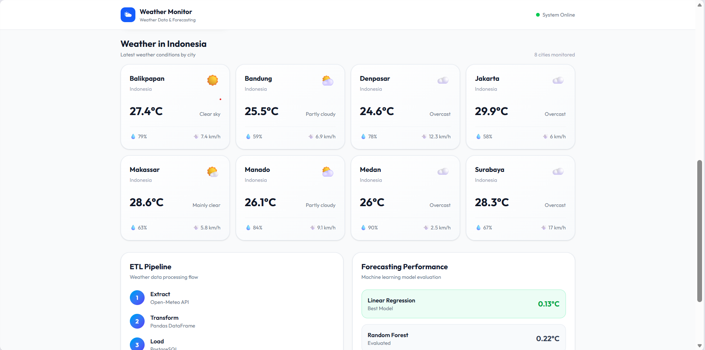
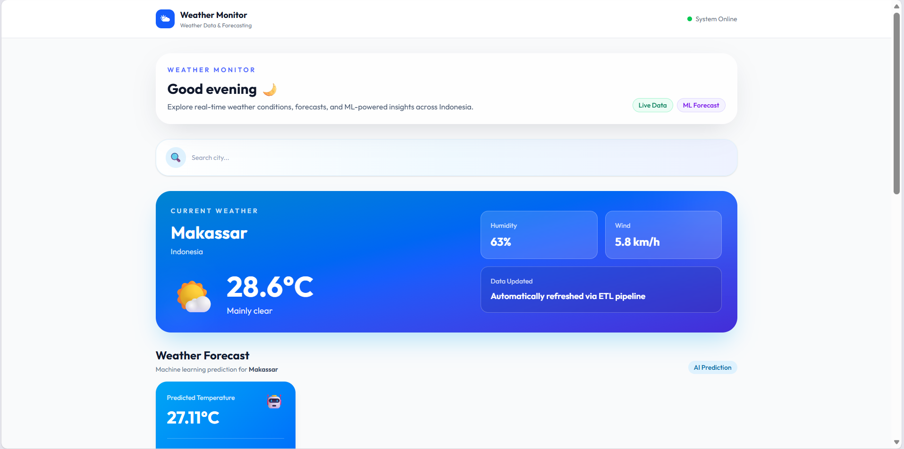
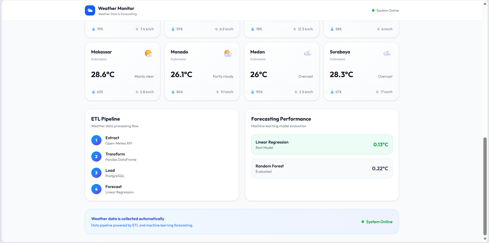

Proyek data engineering dan machine learning end-to-end yang mengumpulkan data cuaca real-time dari Open-Meteo API, memprosesnya melalui pipeline ETL, menyimpannya di PostgreSQL, menghasilkan prakiraan suhu menggunakan machine learning, dan memvisualisasikan hasilnya lewat dashboard berbasis React yang terhubung ke backend FastAPI. Sistem memantau data cuaca dari 8 kota di Indonesia dan menjalankan proses ETL secara otomatis setiap 15 menit.
Data cuaca real-time tersebar di berbagai sumber dan tidak otomatis tersimpan dalam bentuk yang siap dianalisis, sehingga sulit digunakan untuk memantau kondisi cuaca beberapa kota sekaligus maupun untuk membangun prediksi suhu ke depan secara konsisten.
Membangun pipeline ETL otomatis yang mengekstrak data dari Open-Meteo API, mentransformasikannya dengan Pandas, dan memuatnya ke PostgreSQL secara terjadwal. Data historis tersebut kemudian digunakan untuk melatih model machine learning yang memprediksi suhu, dan hasilnya disajikan lewat REST API serta dashboard React yang interaktif.
weather_data di PostgreSQL dengan unique constraint pada kota dan timestamp untuk mencegah duplikasi.weather_forecast.Pipeline ETL berjalan otomatis setiap 15 menit tanpa intervensi manual menggunakan APScheduler.
Prakiraan suhu dihasilkan menggunakan model machine learning yang dilatih dari data historis.
Memantau kondisi cuaca real-time dari 8 kota di Indonesia sekaligus, lengkap dengan fitur pencarian kota.
Endpoint untuk data cuaca terkini, pencarian kota, dan hasil prakiraan, lengkap dengan dokumentasi otomatis.
Visualisasi data cuaca dan hasil prediksi secara real-time melalui antarmuka berbasis React.
Unique constraint pada kota dan timestamp memastikan data cuaca tersimpan tanpa duplikasi.
Dua model machine learning dievaluasi untuk prakiraan suhu, yaitu Linear Regression dan Random Forest. Berdasarkan hasil evaluasi, Linear Regression dipilih sebagai model utama pada implementasi forecasting saat ini karena memberikan performa terbaik untuk kasus penggunaan proyek ini.

